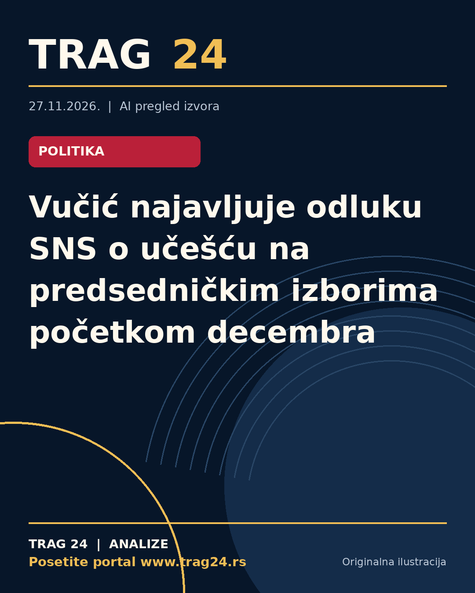

Vučić najavljuje odluku SNS o učešću na predsedničkim izborima početkom decembra

ŠTA SE DOGODILO
Aleksandar Vučić, poslanik Srpske napredne stranke (SNS) i bivši predsednik Srbije, izjavio je da će SNS odluku o učešću na predstojećim predsedničkim izborima saopštiti nakon održavanja sednica Predsedništva i Glavnog odbora stranke početkom decembra, konkretno 3., 4. ili 5. decembra.
HRONOLOGIJA
Izbori za predsednika Srbije raspisani su 26. novembra 2026. godine i zakazani za 27. decembar 2026. Prema Zakonu o izboru predsednika Republike, kandidature sa najmanje 10.000 overenih potpisa birača treba da budu podnete najkasnije do 6. decembra u ponoć. Predsednica Vlade i poslanica SNS Ana Brnabić je ranije najavila da će se o kandidaturi SNS raspravljati tek 13. decembra. Vučić je saopštio da za sada istraživanja o predsedničkim izborima nisu rađena i da ga ona trenutno ne zanimaju.
ŠTA NAVODE IZVORI
Vučić u intervjuima za Kurir i izjavi za N1 i Nova.rs ponavlja da će konačna odluka biti saopštena nakon što Predsedništvo i Glavni odbor stranke zasjedaju početkom decembra. Istovremeno, on ističe da je važno bavljenje ozbiljnom politikom i naglašava pitanja vezana za navodno zaustavljanje "terora" i progona novinara i slobodnomislećih lica. Vučić je kritikovao policijske postupke u više navoda, uključujući nezadovoljstvo reakcijom policije na incident u prodavnici Tehnomanija i postupanje prema glavnom uredniku Informera. Izvor B92 dodaje da je Vučić naveo kako je protiv neposrednog izlaska na izbore.
ŠTA JE POTVRĐENO
Potvrđeno je da će SNS doneti odluku o učešću na predsedničkim izborima nakon sednica Predsedništva i Glavnog odbora stranke početkom decembra. Izbori su zakazani za 27. decembar 2026. godine, a rok za predaju kandidatura je 6. decembar. Takođe, poznato je da predstavnici SNS nisu do sada vršili istraživanja o predsedničkim izborima, prema Vučićevim rečima.
ŠTA NIJE POTVRĐENO
Do sada nije potvrđeno da li će SNS imati svog kandidata na tim izborima niti da li će podržati nekog drugog kandidata. Takođe, tvrdnje o policijskim postupcima i incidentima koje je izneo Vučić nisu zvanično proverene ili potvrđene iz drugih izvora unutar teksta.
ŠTA OSTАJE OTVORENO: Ostaje nejasno da li će SNS direktno učestvovati na izborima vlastitim kandidatom, da li će podržati neku drugu kandidaturu ili eventualno odlučiti o neudjeli na izborima. Takođe, nije poznat tačan datum kada će biti održane sednice Predsedništva i Glavnog odbora SNS i kada će se konačno objaviti odluka o kandidaturi. Dodatno, situacija i navodi u vezi sa policijskim postupcima i kontroverzama koje je Vučić izneo ostaju nerešeni u javnoj sferi.
Izvori
- https://nova.rs/vesti/politika/sns-e-odluku-o-izborima-saoptiti-poetkom-decembra/
- https://www.b92.net/info/politika/288736/aleksandar-vucic-o-predsednickim-izborima-u-srbiji/vest
- https://n1info.rs/vesti/vucic-sns-ce-odluku-o-ucescu-na-predsednickim-izborima-saopstiti-pocetkom-decembra/
Ova analiza je pripremljena uz pomoć veštačke inteligencije na osnovu javno dostupnih izvora. Navodi izvora nisu nužno nezavisno potvrđeni.